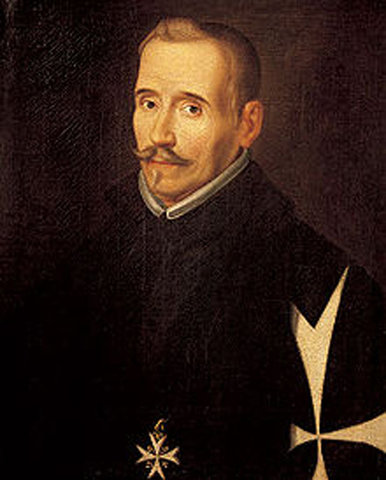

Autor de La Celestina: Fernando de Rojas

¿Quien fue?
Fernando de Rojas fue un escritor español que nació en el 1470 y murio en el 1541. Perteneció a una familia de judíos conversos que era cuatro generaciones vieja y fue perseguida por la Inquisición. Estudió leyes y hasta llegó a ser alcalde, pero la hazaña atribuida a él que lo hace una figura histórica relevante fue el escribir La Celestina. Originalmente llamada La tragicomedia de Calisto y Melibea, su única obra fue la española más importante del siglo XV. Ayudó a desarrlollar la literatura española con su escritura y por eso fue un ser tan importante.
Datos curiosos